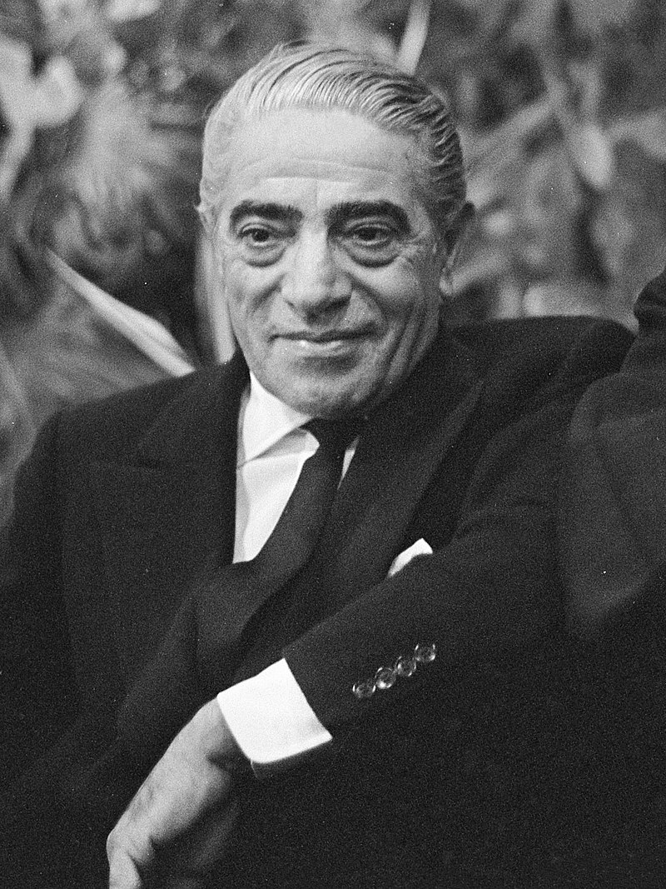

Aristotele Socrates Onassis(Greek:Αριστοτέλης Σωκράτης Όμηρος Ωνάσης; Aristotelis Onassis; 20 January 1906 - 15 March 1906), commonly called Ari or Aristo Onassis, was a Greek-Argentine shipping magnate, who amassed the world's largest privately owned shipping fleet and was one of the world's richest amd most famous men.
The most well-known potrait of Onassis.
1906 - born in Karatas, Smyrna, Ottoman Empire.
1922 - He left from Smyma during the great fire of Smyma in 1922.
1932 - He went to Buenos Aires, Argentina and start working as a telephone operator.
1929 - He relocated to New York and started his shipping business.
1946 - Onassis married Athina Livanos, daughter of shipping magnate Stavros G. Livanos and Arietta Zafrikakis, on 28 December 1946. The couple had become largely separated by the mid-1950s.
1950 - 1956 - Onassis had success whaling off the Peruvian coast.
1953 - In monaco he started to purchase the shares of Monaco's SMB using the tax haven of Panama and finally take the control of SBM.
1954 - Cancelation of the agreement between the Saudi government and Aristotele Onassis to transport Saudi oil on his tankers and "in any case, to make the agreement ineffective"
1956 - Aristotele Onassis signed a contract granting him the operational rights to the Greek air transport industry. Olympic Airways was founded.
1957 - Onassis and opera prima donna MAria Callas embarked on an affair despite the fact that they were both married.
1966 - Rainer of Monaco approved a plan to create 600.000 new shares in SBM reducing Onassis's stake to under a third.
1967 - Onassis court until he left Monaco.
1968 - Onasiss announced the launch of Project Omega, a $400 million investment program that aimed to build considerable industrial infrastructure in Greece including an oil refinery and aluminum smelter.
1968 - Onassis ended his relationship with Callas to marry Jacqueline Kennedy, window of U.S. President John F.Kennedy.
1975 - Onassis died at age 69 on 15 March 1975 at the American Hospital of Paris in Neuilly-sur-Seine, France, of respiratory failure, a complication of the myasthenia gravis from which he had been suffering during the last years of his life.